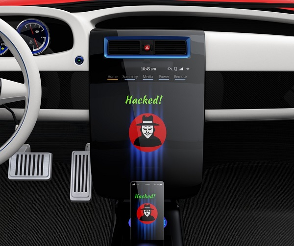

Sécurité
par Matteo MUNOZ
Les considérations de sécurité dépendent du niveau d'autonomie du véhicule, selon qu'il s'agisse d'un véhicule autonome qui devra accomplir toutes les tâches de sécurité aussi bien qu'un conducteur humain, ou d'un véhicule apportant une aide à la conduite. Il est anticipé que le véhicule autonome pourrait à terme apporter un gain de sécurité, mais avant, personne ne sera intéressé par la conduite autonome d'un véhicule jusqu'à ce qu'un gain de sécurité très net par rapport à la conduite humaine soit prouvé.
À partir du moment où un objet est connecté, il PEUT être piraté.
Tandis qu’auparavant, le plus grand risque (lorsqu’on possédait une voiture) était de se faire voler ses clés « matérielles », les progrès rapides de la technologie ont introduit un nouvel élément dans l’équation : le vol des clés « numériques » qui devrait être de plus en plus plébiscité par les (cyber)criminels. Prenons un constructeur automobile X qui dispose d’un serveur central recevant les flux de tous ses véhicules, tels que des données sur la localisation, stockées dans ses locaux ou dans le cloud ; le véhicule devra dans ce cas s’authentifier afin de se connecter à ce système central. Une question de confiance se posera alors : comment le constructeur peut-il être certain que la voiture qui communique avec son système est bien celle de son client ? Et inversement, comment être sûr que le système qui communique avec la voiture n’est pas en réalité un pirate ?
La sécurité informatique des voitures autonomes : un enjeu de taille
En 2013, les chercheurs de l’académie de Berlin ont établi un ensemble de mesures à prendre en considération pour sécuriser les voitures autonomes. En voici une synthèse :
- Sécuriser les informations reçues et émises par les véhicules en les rendant anonymes.
- Intégrer des systèmes avancés et automatiquement mis à jour, capables de détecter toutes sortes d’intrusions.
- Sécuriser les technologies sans fils de la voiture (Wi-Fi et Bluetooth, notamment).
- Développer les mécanismes anti-vol des voitures connectées.
- Sécuriser l’activation des composants de la voiture.
Pour traduire ces mesures en solutions informatiques concrètes et viables, la filière va devoir combler un besoin conséquent en professionnels de la cybersécurité et de l’informatique en général.